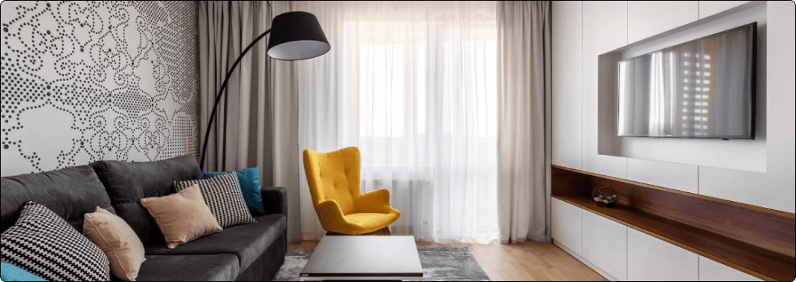

Як правильно обрати ліжко?
При виборі ліжка в інтернет магазині Вам в першу чергу потрібно вибрати матеріал. Найбільшою популярністю користуються дерев'яні ліжка, виготовлені з вільхи, ясена чи дуба. Такі моделі чудово прикрасять Вашу спальню у квартирі чи приватному будинку. Для орендованих квартир, під здачу, більше підійде ліжко з металу, так як воно просто «не вбивається», а також має дуже демократичну ціну.
Для Вашої зручності ліжко може комплектуватись висувними ящиками або підйомним механізмом. Ящики можуть бути з одного боку ліжка або з двох. Також є моделі, з висувними ящиками спереду. Ліжка з підйомним механізмом, це відмінне рішення, для невеликих кімнат, вони дозволяють заощадити простір і мають велику нішу для зберігання постільної білизни. Всі дерев'яні ліжка комплектуються буковими ламелями. Спальне місце з ламельною основою може витримувати навантаження до 150 кг на одне спальне місце. Відстань між ламелями, у своїй має бути 2,5-3 див.
Кожне ліжко може бути забарвлене у різні кольори: чорні, білі, сірі, венге, у кольорі горіх. Завдяки цьому ліжко можна підібрати під будь-який інтер'єр. Важливим складником правильного вибору ліжка є вибір розміру. Ліжка поділяються на: Односпальні 80 та 90 см шириною. Полуторні 120 та 140 см. шириною. Двоспальні 160 та 180 см. шириною. Також багато ліжок можуть бути виготовлені за індивідуальним розміром, наприклад 200 або 220 см шириною . Спеціально для Ваших діток у нашому інтернет-магазині Krovato.com є великий вибір дитячих ліжечок: двоярусні, ліжка машинки, підліткові та інші.
Спальню відмінно доповнить комплект тумбочок і комода. Ми співпрацюємо тільки з найкращими виробниками меблів, такими як Хмельницька Меблева Фабрика, Legko, MiroMark, АрборДрев, Естелла, Novelty. Наш магазин радує покупців постійними акціями. Наприклад, купивши ліжко з матрацом, Ви отримаєте безкоштовне складання ліжка, а також наматрацник у подарунок або знижку на матрац. Таким чином, ви отримуєте не тільки відмінну якість продукції, але і безліч бонусів, таких як безкоштовна доставка по Києву.
Ви можете замовити ліжко у нас з доставкою по Києву та Україні. Ми працюємо з доставками Нова Пошта, Делівері, ІнТайм, так само ви можете забрати Ваше замовлення у нас самовивозом. Відгуки про всі товари Ви завжди можете прочитати у розділі Відгуки. Замовити Ви можете: зателефонувавши нам, залишивши замовлення на нашому сайті Krovato.com, або замовивши зворотній дзвінок. Наші менеджери завжди, з радістю, допоможуть Вам із вибором.
Оформлення вітальні. Які м'які меблі краще вибрати?
Вітальня – це основна кімната у кожному будинку. Саме вона служить для прийому гостей, проведення часу всією сім'єю та просто для відпочинку у приємній теплій атмосфері. Оформляючи свій будинок та вітальню зокрема, всі намагаються зробити її максимально зручною, комфортною та красивою. Основним та центральним елементом оформлення вітальні, як і будь-якої іншої кімнати, є м'які меблі.
Будь-які меблі для вітальні повинні бути не тільки стильними і красивими, але і функціональними. На таких меблів має бути зручно та приємно відпочивати та приймати гостей. Однак сьогодні існує величезна різноманітність найрізноманітніших м'яких меблів для вітальні, яка підходить для кімнат різних розмірів і форм. На чому варто зупинити свій вибір? Як краще оформити свою вітальню, щоб вам було комфортно, а гості хотіли приходити до вас знову та знову?
На сайті інтернет магазину Кровато представлено велику різноманітність м'яких меблів для вітальні, серед яких кожен зможе вибрати для себе найбільш вдалий варіант. У нас ви знайдете:
-
Прямі дивани. Такі дивани вважаються класикою. Вони підходять для віталень будь-яких форм та розмірів. Прямий диван виглядає стильно та лаконічно, на ньому зручно відпочивати, приймати гостей або навіть спати. Прямі дивани можуть стояти біля стіни, так і в центрі кімнати. Багато моделей прямих диванів легко розкладаються, перетворюючись на повноцінне спальне місце. Також більшість диванів мають великі та місткі ніші, які є додатковим місцем для зберігання;
-
Кутові дивани Кутові дивани вважаються найзручнішими та комфортнішими. Вони ідеально підійдуть для приємного проведення часу в колі сім'ї або друзів. Кутові дивани в основному використовуються для оформлення великих віталень, так як вони займають багато місця, і для кімнат з невеликою площею просто не підійдуть;
-
Тахти. Тахта - це одна з варіацій дивана, але стильніша і мінімалістична. Виглядають тахти дуже незвично і можуть підійти для будь-якого інтер'єру. Також тахти більше ніж звичайні дивани підходять для сну, оскільки в їх основі не пружинні блоки, а дерев'яні ламелі або ортопедичні матраци;
-
Крісла. Крісло – це особливий предмет інтер'єру. Сучасні дизайнери не часто використовують його, вважаючи застарілим, проте саме крісла створюють особливий затишок та комфорт у будь-якій кімнаті. Сьогодні існує величезна різноманітність класичних та сучасних моделей крісел, що дозволяє кожному відшукати ідеальне крісло для свого будинку;
-
Набір меблів. Комплект м'яких меблів – це відмінне рішення для тих, хто хоче меблювати свою вітальню не лише диваном, а й кріслами. Існують набори з одним або двома кріслами, із прямими або кутовими диванами. Основна перевага будь-якого готового меблевого гарнітура – це те, що предмети меблів у ньому ідеально поєднуються один з одним, і вам не потрібно буде витрачати свій час та сили на їхній підбір.
Підбір м'яких меблів для вітальні – це заняття непросте. Однак при виборі та покупці меблів для своєї вітальні пам'ятайте, що якісні м'які меблі повинні бути не тільки красивими, але й зручними для вас і всіх мешканців вашого будинку.